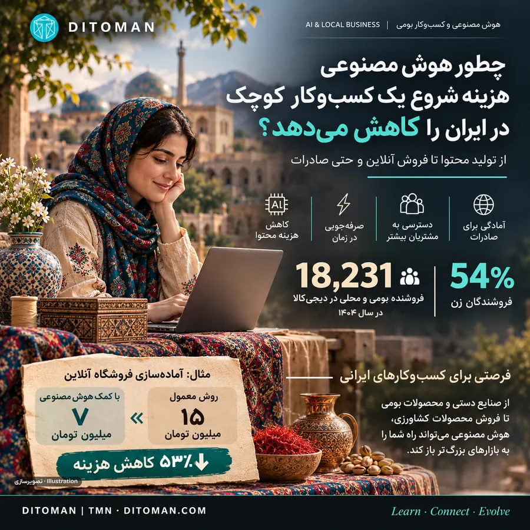
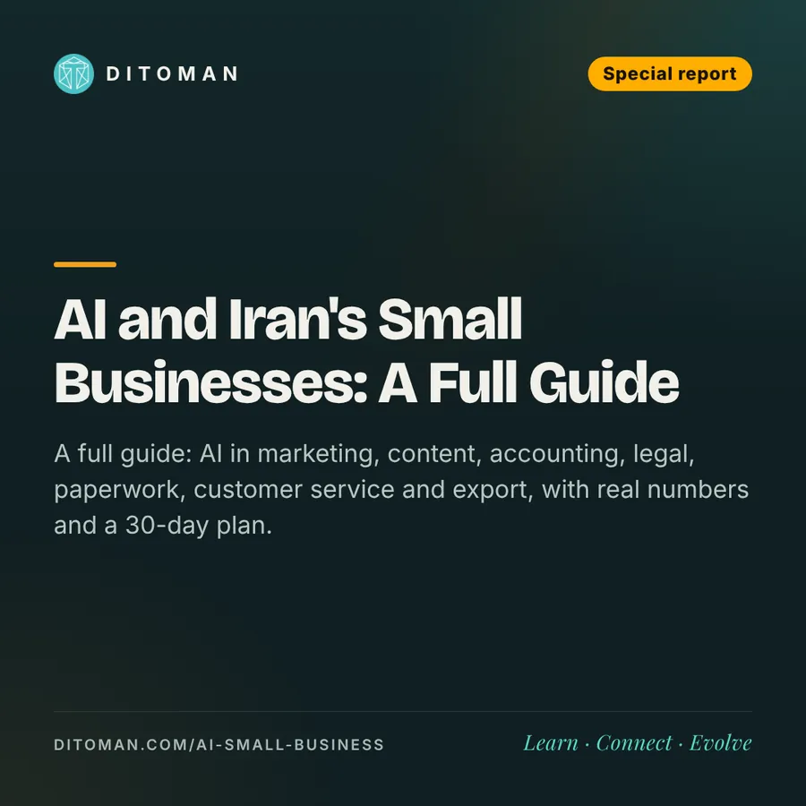

از سوزندوزی بلوچستان تا عسل اردبیل؛ هوش مصنوعی چطور کسبوکار کوچک ایرانی را متحول میکند؟
From Baluch embroidery to Ardabil honey: how AI can transform Iran's small businesses
راهنمای کامل: هوش مصنوعی در بازاریابی، محتوا، حسابداری، امور حقوقی، مدارک، خدمات مشتری و صادرات، با حسابوکتاب واقعی و برنامهی ۳۰ روزه.
A full guide: AI in marketing, content, accounting, legal, paperwork, customer service and export, with real numbers and a 30-day plan.
۰۰. ۱۸ هزار و ۲۳۱ فروشندهی بومی، فقط در یک بازارگاه
این یکی از جالبترین اعداد گزارش سال ۱۴۰۴ دیجیکالاست. تعداد فروشندگان بومی و محلی از ۳٬۴۸۵ نفر در سال ۱۴۰۰ به بیش از ۱۸ هزار نفر رسیده؛ یعنی بیش از پنج برابر.
جالبتر اینکه طبق گزارش این شرکت، ۵۴ درصد فروشندگان بومی و محلی زن هستند و ۴۱ درصد فروش این بخش به محصولات دستساز و صنایعدستی اختصاص دارد.
پشت این اعداد، یک فرصت اقتصادی مهم قرار گرفته است: تولیدکنندهای در یک شهر کوچک دیگر الزاماً مجبور نیست فقط به مشتریان همان شهر بفروشد.
حالا تصور کنید هوش مصنوعی هم به این مسیر اضافه شود. این گزارش یک راهنمای کامل است: از داستان چند تولیدکننده تا کاربرد هوش مصنوعی در بازاریابی، محتوا، حسابداری، امور حقوقی، مدارک، خدمات مشتری و صادرات، و یک برنامهی ۳۰ روزه برای شروع.
۰۱. یک کارگاه سوزندوزی در بلوچستان
فرض کنیم یک کارگاه خانوادگی، کیف و رومیزی سوزندوزی تولید میکند.
برای فروش آنلاین باید از محصولات عکس بگیرد، توضیحات بنویسد، قیمت تعیین کند، سفارشها را پیگیری کند و به مشتریان پاسخ بدهد.
هوش مصنوعی میتواند توضیحات محصولات را به فارسی و انگلیسی آماده کند، پیشنهادهایی برای معرفی بهتر کالا بدهد و پاسخ اولیه به پرسشهای متداول را بنویسد.
مثلاً اگر تهیهی محتوای اولیهی ۳۰ محصول به روش قبلی ۶ میلیون تومان هزینه داشته باشد، اما تولیدکننده بتواند با ابزارهای هوش مصنوعی و کمک یک ویراستار همان کار را با ۲ میلیون تومان انجام دهد، ۴ میلیون تومان از هزینهی آمادهسازی محتوا کم میشود. این فقط یک سناریوی فرضی است، نه قیمت قطعی بازار.
نکتهی مهم: تصاویر محصول باید واقعی باشند؛ هوش مصنوعی نباید طرح، جنس یا کیفیتی را به مشتری وعده بدهد که در محصول وجود ندارد.
۰۲. تولیدکنندهی عسل در اردبیل
یک زنبوردار را تصور کنید که فروشش عمدتاً به مشتریان محلی یا چند واسطه وابسته است.
او میتواند با کمک هوش مصنوعی برای محصولاتش توضیحات منظم بنویسد، سفارشها را در یک فایل ثبت و تحلیل کند و محتوای آموزشی دربارهی نگهداری و مصرف عسل آماده کند. بعد محصولاتش را در بازارگاههایی مانند باسلام یا دیجیکالا عرضه کند.
یک حساب ساده (فرضی):
| قلم | مبلغ برای هر بسته |
|---|---|
| قیمت فروش | ۶۰۰ هزار تومان |
| هزینهی تمامشدهی محصول و بستهبندی | ۴۲۰ هزار تومان |
| کارمزد فرضی بازارگاه (۸٪) | ۴۸ هزار تومان |
| باقیمانده پیش از ارسال، مرجوعی، تبلیغات و مالیات | ۱۳۲ هزار تومان |
در فروش ماهانهی ۱۰۰ بسته، این رقم ۱۳ میلیون و ۲۰۰ هزار تومان است؛ نه سود خالص قطعی.
هوش مصنوعی ممکن است هزینهی تولید محتوا و مدیریت سفارش را پایین بیاورد، اما نمیتواند کیفیت عسل، مجوزهای لازم یا مشتری واقعی ایجاد کند.
۰۳. از برنج گیلان و خرمای جنوب تا زعفران خراسان
در بسیاری از شهرهای ایران، تولیدکنندگان کوچک محصولات باکیفیتی دارند، اما رساندن آنها به مشتری در شهرهای دیگر دشوار است.
یک خانوادهی تولیدکنندهی خرما در جنوب میتواند با کمک هوش مصنوعی فهرست محصولات، کاتالوگ عمدهفروشی، متن معرفی برای فروشگاهها و جدول مقایسهی هزینهی بستهبندی و ارسال تهیه کند.
یک فروشندهی زعفران در خراسان میتواند توضیحات چندزبانه و کاتالوگ صادراتی اولیه آماده کند.
اما برای فروش مواد غذایی، استانداردهای کیفیت، مجوزهای بهداشتی، برچسبگذاری و شرایط حملونقل همچنان ضروریاند.
۰۴. پژوهشهای جهانی چه میگویند؟
- هاروارد و BCG (۷۵۸ مشاور): استفاده از هوش مصنوعی در وظایف مناسب، کار را ۲۵٫۱٪ سریعتر کرد، ۱۲٫۲٪ کار بیشتری انجام شد و کیفیت حدود ۴۰٪ بالاتر رفت
- استنفورد و MIT (۵٬۱۷۲ کارمند پشتیبانی): بهرهوری بهطور متوسط ۱۵٪ بیشتر شد؛ تازهکارها بیشترین سود را بردند
- فدرال رزرو سانفرانسیسکو: نزدیک ۴۰٪ کسبوکارهای کوچک آمریکا از هوش مصنوعی استفاده میکنند یا قصد استفاده دارند؛ در بازاریابی، محتوا، طراحی، پشتیبانی، تحلیل داده و برنامهنویسی
و یک هشدار جدی:
در همان پژوهش هاروارد، برای کار پیچیدهای که خارج از توان ابزار بود، کسانی که به هوش مصنوعی تکیه کردند ۱۹ واحد درصد کمتر به جواب درست رسیدند. یعنی هوش مصنوعی در همهی کارها یکسان کمک نمیکند.
این نتایج دربارهی کارهای مشخصی هستند و نمیتوان آنها را مستقیماً به درصد صرفهجویی همهی کسبوکارهای ایرانی تبدیل کرد.
۰۵. جعبهابزار هوش مصنوعی برای هر بخش کسبوکار
این بخش قلب این گزارش است: هوش مصنوعی در هر بخش دقیقاً چه کاری میکند و کجا هنوز به انسان نیاز داریم.
📣 بازاریابی و فروش
- کمک هوش مصنوعی: ایدهی کمپین، متن تبلیغ، کپشن اینستاگرام، تقویم محتوای ماهانه، نسخههای مختلف یک آگهی برای آزمایش، تحلیل نظرهای مشتریان
- کار انسان: شناخت واقعی مشتری، تصمیم بودجهی تبلیغ، ساختن اعتماد و رابطه
- یک دستور نمونه: «برای عسل کوهستانی اردبیل، ۱۰ کپشن کوتاه اینستاگرام بنویس؛ صادق، بدون ادعای درمانی، با لحن گرم.»
✍️ محتوا و برند
- کمک هوش مصنوعی: توضیح محصول به چند زبان، داستان برند، پیشنویس مقاله و ویدیو، زیرنویس، پیشنهاد نام و شعار
- کار انسان: عکس واقعی، ویرایش نهایی، بررسی اصالت و حقوق استفاده از تصاویر
- مراقب باش: تصویر ساختهشده با هوش مصنوعی را جای عکس واقعی محصول نگذار
🧮 حسابداری و امور مالی
- کمک هوش مصنوعی: دستهبندی هزینهها، ساختن جدول قیمت تمامشده، محاسبهی نقطهی سربهسر، پیشنویس گزارش ماهانه، یادآوری سررسیدها
- کار انسان: ثبت رسمی، اظهارنامهی مالیاتی و کنترل اسناد با حسابدار
- یک دستور نمونه: «این فهرست هزینههای ماه را دستهبندی کن و بگو قیمت تمامشدهی هر بسته چقدر میشود.»
⚖️ امور حقوقی و قراردادها
- کمک هوش مصنوعی: پیشنویس شرایط فروش و مرجوعی، قرارداد ساده با تأمینکننده یا همکار، سادهسازی متن قوانین برای فهم بهتر
- کار انسان: هر قراردادی که پول یا تعهد جدی در آن است، باید پیش از امضا به تأیید وکیل یا مشاور حقوقی برسد
- مراقب باش: هوش مصنوعی گاهی قانون یا مادهای را با اطمینان نقل میکند که وجود ندارد؛ همیشه با منبع رسمی تطبیق بده
📄 مدارک، مجوزها و کارهای اداری
- کمک هوش مصنوعی: تهیهی چکلیست مدارک، پیشنویس نامهها و درخواستها، خلاصهکردن آییننامهها، آمادهسازی متن برای سامانههای اداری
- کار انسان: پیگیری رسمی مجوزها؛ مثلاً نماد اعتماد الکترونیکی برای فروشگاه اینترنتی، مجوزهای بهداشتی برای مواد غذایی و ثبت در سامانههای مالیاتی
- نکته: شرایط مجوزها تغییر میکند؛ همیشه آخرین الزامات را از مرجع رسمی همان مجوز بپرس
💬 خدمات مشتری
- کمک هوش مصنوعی: پاسخ آماده برای پرسشهای تکراری (ارسال، قیمت، نگهداری)، پیشنویس پیامهای پیگیری سفارش، ترجمهی پیام مشتری خارجی
- کار انسان: شکایت، مرجوعی، مشکل واقعی و هر جایی که مشتری باید حس کند با یک آدم حرف میزند
📦 عملیات و موجودی
- کمک هوش مصنوعی: جدول ثبت سفارش، پیشبینی سادهی فروش فصلی، مقایسهی هزینهی بستهبندی و ارسال، برنامهی تولید هفتگی
- کار انسان: کنترل کیفیت، بستهبندی و ارتباط با تأمینکننده
🌍 صادرات
- کمک هوش مصنوعی: کاتالوگ انگلیسی یا عربی، مشخصات فنی محصول برای خریدار خارجی، پیشنویس مکاتبات تجاری، تحقیق اولیه دربارهی بازار مقصد
- کار انسان: خریدار واقعی، روش قانونی دریافت پول، حملونقل، گمرک و استانداردهای کشور مقصد
هوش مصنوعی هزینهی آمادهشدن برای صادرات را کم میکند؛ اما بهتنهایی صادرات ایجاد نمیکند.
۰۶. باسلام و دیجیکالا چه کمکی میکنند؟
باسلام یک بازارگاه آنلاین است که فروشندگان میتوانند در آن غرفه ایجاد کنند، محصولاتشان را معرفی کنند و سفارش مشتریان را دریافت کنند.
دیجیکالا نیز امکان عرضهی محصولات فروشندگان مستقل را فراهم کرده و بخش ویژهای برای کالاهای بومی و محلی دارد.
این دو بستر میتوانند نیاز به راهاندازی فروشگاه اینترنتی مستقل از روز اول را کم کنند؛ هرچند کارمزد، رقابت، ارسال و شرایط تسویه همچنان باید بررسی شوند.
طبق گزارش سال ۱۴۰۴ دیجیکالا:
- فروشندگان بومی و محلی: ۱۸٬۲۳۱ نفر
- فروش صنایعدستی: ۴۰٪ رشد نسبت به سال قبل
- میانگین فروش سالانهی فروشندگان بازارگاه: حدود ۱٫۲ میلیارد تومان؛ میانگین همهی فروشندگان، نه درآمد یا سود هر کسبوکار روستایی
۰۷. یک کسبوکار کوچک واقعاً چقدر صرفهجویی میکند؟
یک تولیدکنندهی صنایعدستی میخواهد ۳۰ محصول را برای فروش آنلاین آماده کند (مثال فرضی):
| بخش | روش معمول | با کمک هوش مصنوعی |
|---|---|---|
| عکاسی و آمادهسازی تصاویر | ۴ میلیون تومان | ۳ میلیون تومان |
| نوشتن توضیحات و معرفی محصولات | ۶ میلیون تومان | ۲ میلیون تومان |
| کاتالوگ و محتوای اولیه | ۵ میلیون تومان | ۲ میلیون تومان |
| جمع | ۱۵ میلیون تومان | ۷ میلیون تومان |
یعنی ۸ میلیون تومان صرفهجویی (حدود ۵۳٪) در هزینهی آمادهسازی اولیه. عکسها واقعیاند و فقط برای اصلاح نهایی از متخصص کمک گرفته میشود. این ارقام نمونهی محاسباتی دیتومان هستند و باید برای هر کسبوکار با قیمتهای واقعی جایگزین شوند.
آیا برای من صرفه دارد؟ یک حساب ماهانه:
| مثال مثبت | مثال منفی | |
|---|---|---|
| ساعت صرفهجوییشده | ۱۵ ساعت | ۸ ساعت |
| ساعت بازبینی و اصلاح | ۳ ساعت | ۷ ساعت |
| ارزش هر ساعت | ۲۰ یورو | ۲۰ یورو |
| هزینهی ابزار | ۴۰ یورو | ۴۰ یورو |
| نتیجه | ۲۰۰+ یورو در ماه | ۲۰- یورو در ماه |
درس این جدول: ابزار درست را برای کار درست انتخاب کن. کار تکراری و قابلبررسی را بسپار؛ کار پیچیدهای که بازبینیاش طول میکشد را نه.
۰۸. برنامهی ۳۰ روزه برای شروع
هفتهی اول: یک کار، نه همهی کارها
یک کار تکراری انتخاب کن؛ مثلاً توضیح محصولات یا جواب پیامهای پرتکرار. فقط همان را با هوش مصنوعی انجام بده.
هفتهی دوم: اندازه بگیر
ثبت کن چقدر وقت صرفهجویی شد و چقدر صرف اصلاح شد. اگر اصلاح بیشتر از صرفهجویی بود، کار یا ابزار را عوض کن.
هفتهی سوم: گسترش بده
یک کار دوم اضافه کن؛ مثلاً تقویم محتوای ماهانه یا جدول قیمت تمامشده.
هفتهی چهارم: ثبت کن و قانون بگذار
بهترین دستورهایت را در یک فایل نگه دار. برای خودت قانون بگذار که چه چیزهایی هرگز بدون بازبینی منتشر نمیشود: قیمت، ادعای کیفیت، متن حقوقی و اطلاعات مالی.
۰۹. خطرها و مرزها
- اطلاعات نادرست: هوش مصنوعی گاهی با اطمینان اشتباه میکند؛ عدد، قانون و ادعا را همیشه چک کن
- حریم خصوصی: اطلاعات شخصی مشتری، رمزها و اسناد مالی حساس را در ابزارهای ناشناس وارد نکن
- ادعای نادرست دربارهی محصول: بهخصوص برای مواد غذایی؛ ادعای درمانی یا کیفی بدون پشتوانه هم اعتماد را از بین میبرد و هم دردسر قانونی دارد
- وابستگی: اگر ابزاری در دسترس نبود یا قیمتش بالا رفت، کسبوکارت متوقف نشود
- محدودیتهای ایران: پرداخت اشتراک، دسترسی به بعضی سرویسها و کیفیت فارسی ابزارها هنوز چالش است؛ دربارهی میزان صرفهجویی کسبوکارهای ایرانی هم هنوز دادهی ملی معتبری نداریم
۱۰. آینده: چند سال بعد چه شکلی است؟
- دستیارهای کامل: ابزارهایی که نه فقط متن مینویسند، بلکه سفارش ثبت میکنند، موجودی را چک میکنند و گزارش میدهند؛ البته با تأیید انسان
- فارسی بهتر: کیفیت ابزارهای فارسیزبان رو به بهتر شدن است و این یعنی دسترسی بیشتر برای تولیدکنندگان شهرهای کوچک
- رقابت روی کیفیت: وقتی همه میتوانند محتوای خوب بسازند، تفاوت اصلی دوباره به کیفیت محصول، صداقت و خدمات برمیگردد
- مهارت تازه: «بلد بودن کار با هوش مصنوعی» مثل «بلد بودن کار با اینترنت» در دههی ۸۰، از یک امتیاز به یک ضرورت تبدیل میشود
۱۱. نگاه دیتومان: فرصتی برای شهرهای کوچک ایران
برای یک تولیدکننده در تهران، دسترسی به طراح، عکاس، مشاور فروش یا شرکت تبلیغاتی ممکن است سادهتر باشد.
اما برای یک کارگاه کوچک در زابل، اردبیل، بیرجند یا یک روستای لرستان، همین خدمات میتوانند هزینهبر یا دور از دسترس باشند.
هوش مصنوعی میتواند بخشی از این فاصله را کمتر کند و بازارگاههای اینترنتی میتوانند راه دسترسی به مشتریان بیشتری را باز کنند.
این ترکیب شاید یکی از فرصتهای مهم اقتصاد دیجیتال ایران باشد: محصولی که در یک شهر کوچک ساخته میشود، با ابزارهای سادهتر معرفی شود و به مشتری در سراسر ایران برسد.
ارزش اصلی فناوری همینجاست؛ وقتی به یک تولیدکننده کمک میکند زمان کمتری صرف کارهای اداری و تبلیغاتی کند و بیشتر روی کیفیت محصول و رضایت مشتری تمرکز داشته باشد.
آینده متعلق به کسی نیست که بیشترین ابزار را دارد؛ متعلق به کسی است که میداند کدام کار را به ماشین بسپارد و کدام تصمیم را خودش بگیرد.
بیشتر بخوانید
- بانکهای بزرگ وارد رقابت استیبلکوین شدند
- چرا یونایتد خرید بلیت با هوش مصنوعی را ممنوع کرد؟
- اروپا به رفاه گرانقیمت عادت کرده؛ چه کسی هزینهاش را میپردازد؟
- صنعت تازه: ساختن هوش مصنوعی برای کسبوکارها
- تو عقب نیفتادهای؛ زمین مسابقه جلوتر دویده
منابع
- Rooziato: Digikala local business report 1404
- Zoomit: Digikala 1404 annual report, sellers
- Digikala report 1401 (PDF)
- Digiato: about Basalam
- Harvard/BCG: Navigating the Jagged Technological Frontier
- Brynjolfsson, Li, Raymond: Generative AI at Work (QJE)
- SF Fed: AI adoption among small businesses
آخرین بازبینی: ۲۲ آبان ۱۴۰۵. دیتومان یک رسانهی آموزشی است و این گزارش توصیهی سرمایهگذاری نیست.